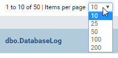

Data Model/Relationships and Schema¶
The Data Model/Relationships and Data Model/Schema pages allows user to
- manage relationships for tables, views and stored procedures
- view database schema
List relationships¶
In browser, log in to Izenda as a user with Data Model permission.
Click Settings, then Data Setup then Data Model in the left menu.
Select the Setting Level: either System or a specific tenant.
Select Relationships in the Middle Panel. (Fig. 94)
Relationships of all visible data sources from all connections will be displayed.
By default, only the first page with 10 items are displayed. To see more, either use the next page icon

Fig. 95 Data Model - Next Page
or select a larger number in Items per page box.
Fig. 96 Data Model - Items per page
{kind=link}
{kind=link}
Search for relationships¶
The Search box at the top allows user to search for specific relationships.
-
Select a specific element to search for in the dropdown on the left of the Search box. Default is All.
Type a partial name and click the search icon (üîç).
Only the matching relationships will be displayed.
{kind=link}
Add relationship¶
-
Click the Add Relationship button at the top. (Fig. 98)
A new empty row will appear at the first line.
Select the elements of the relationship from dropdown boxes.
User must select Connection Name, then Data Source, then Data Source Field in that order for the dropdown boxes to populate conveniently.
Continue to add more relationships.
Click the Save button at the top.
{kind=link}
{kind=link}
{kind=link}
Note
Only single-column relationships are supported in Data Model. Multiple-column relationships are supported in Report Designer.
Copy relationship¶
The copy feature help users to save efforts in adding and editing relationships.
- Click the Copy icon (that looks a bit like this ❐) of each relationship to copy its details to a new line beneath.
- Edit the new line to make a new relationship.
- Continue for more relationships.
- Click the Save button at the top.
Edit relationship¶
User can freely edit any relationship in a page and save them.
Delete relationship¶
User can only delete relationships newly created in Data Model. Relationships originally created from physical database cannot be deleted, their delete icon will be disabled.
- Click the Delete icon (x) of each relationship.
- Click OK in the confirmation pop-up.
- The relationship is deleted.
Warning
The Cancel button at the top will have no effect in this case.
View the schema¶
To be updated.